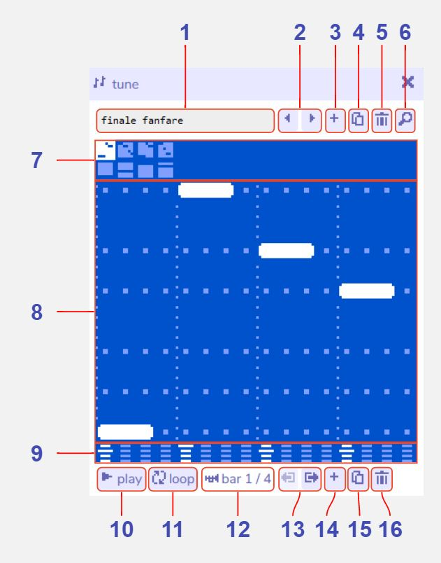
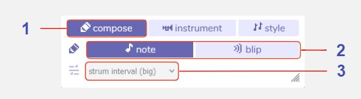
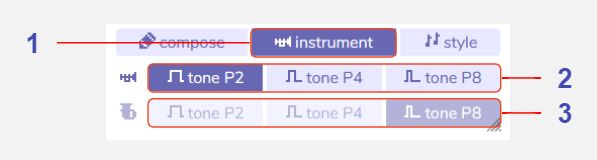
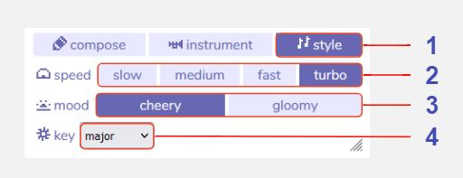

Tune
Description
The tune tool is where you compose music for your game. Tunes created with this tool can be set as looping background music for a room, or played from dialog.
Features
Main panel

Tune name. The name of the currently selected tune.
Previous / next tune. Navigate through all the tunes in your game.
Add new tune. Create a new tune.
Duplicate tune. Make a copy of the current tune.
Delete tune. Delete the current tune.
Open tune in find tool. Show all tunes in the find tool.
Bar selector (melody and harmony). Select the current bar (or measure) of music to edit in the piano roll. The top row of bars is the melody, the bottom row is the harmony.
Piano roll. The piano roll is where you input notes for your tune. Click on an empty space to add a note, or click and drag to add longer notes. Click on a note to erase it.
- Strum mode (Arpeggiated harmony). When arpeggiation is enabled for the harmony, instead of entering each note individually the piano roll is used to select the initial note of a scale that will be played according to the selected harmony strum pattern (see Compose Menu for details).
Note octave. Click the octave icon below the start of a note to cycle through octaves. There are four octaves available.
Play. Play the current tune. (Becomes a stop button while playing.)
Toggle loop on / off. When enabled the current bar will loop instead of continuing on to the rest of the tune. Helpful when making adjustments to a single bar.
Bar indicator. The numbers indicate which bar is selected. The icon to the left of the numbers indicates whether the melody (trumpet icon) or harmony (tuba icon) is visible in the piano roll.
Move selected bar left / right. Re-order the currently selected bar within the tune.
Add new bar. Add a new empty bar. You can have up to 16 per tune.
Duplicate selected bar. Make a copy of the current bar and add it to the end of the tune.
Delete selected bar. Delete the current bar.
Compose Menu

Compose button. Select to show the compose tools.
Note entry tool. Choose the type of note to use when entering notes in the piano roll.
- Note. Musical notes.
- Blip. Sound effects created using the blip tool.
Harmony strum pattern (arpreggios). Choose what arpeggio pattern to use for the harmony. (Only enabled when a harmony bar is selected.)
- Strum off. Disable arpeggio mode to input harmony notes manually.
- Strum chord (up). Arpeggiate a four note chord, moving up the scale.
- Strum chord (down). Arpeggiate a four note chord, moving down the scale.
- Strum interval (small). Arpeggiate a two note alternating interval.
- Strum interval (big). Arpeggiate a two note alternating interval, a full octave apart.
Instrument Menu

Instrument button. Select to show the instrument tools.
Melody instrument tone. Select the tone to use for notes in the melody.
- Tone P2. A pulse wave with a duty of 1/2, aka a square wave.
- Tone P4. A pulse wave with a duty of 1/4.
- Tone P8. A pulse wave with a duty of 1/8.
Harmony instrument tone. Select the tone to use for notes in the harmony.
Style Menu

Style button. Select to show the musical style tools.
Tune speed (tempo). Choose how fast the tune should play.
- Slow. 60 bpm (adagio).
- Medium. 80 bpm (andante).
- Fast. 120 bpm (moderato).
- Turbo. 160 bpm (allegro).
Tune mood. Swap between cheery (major key) and gloomy (minor key) moods. When using this setting, notes will automatically be transposed to the equivalent note in the new key. (Not available in chromatic mode - see below.)
- Tip: Try making a copy of a tune and swapping its mood to see how it sounds!
Key. Advanced musical key options. Controls which notes are available to use in the piano roll.
- Major. Restricts notes to the C major pentatonic scale. This is a basic key that's easy to work with.
- Minor. Restricts notes to the C minor pentatonic scale. This is a basic key that's easy to work with.
- Full major. Restricts notes to the C major diatonic scale. An intermediate key that provides more flexibility than the basic keys.
- Full minor. Restricts notes to the C minor diatonic scale. An intermediate key that provides more flexibility than the basic keys.
- Chromatic. Enables the full 12-note musical scale. Advanced. (Note: When chromatic mode is enabled, arpeggiated harmony features are disabled.)